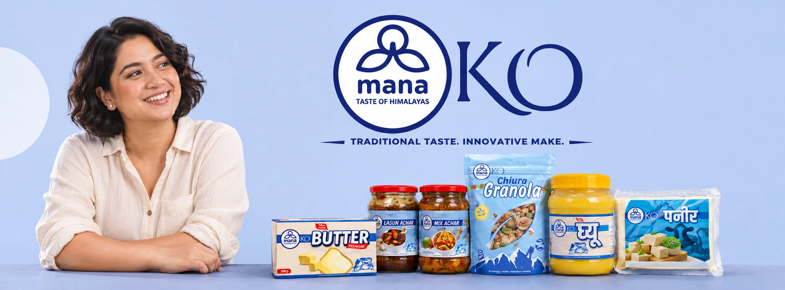
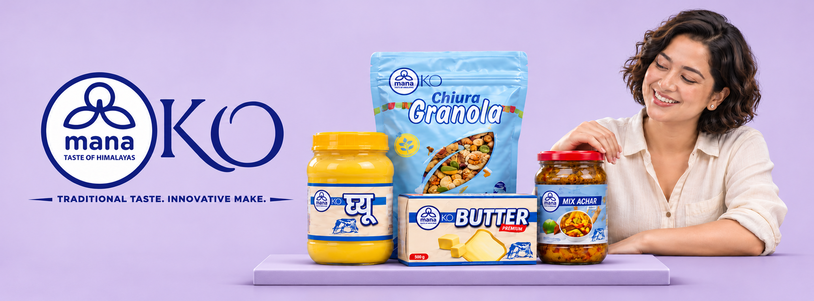

The farm behind Mana Ko
When we founded Manaram Farm in Jhapa in 2014, we wanted to turn more of what Nepal grows into food made here. Creating jobs for women in our community was part of that purpose.
Today our team makes paneer from our herd’s milk, pickles tart lapsi fruit and blends roasted grains for sattu. These are some of the foods we supply to retail partners under our Mana Ko and Poshilo brands.


Certified toISO 22000:2018
Product portfolio
Nepali food traditions, from cultured milk
to roasted grain blends
Retail partners by market
Local resources. Modern methods. One farm you can trust.
We grow and source across Nepal to support our community, then finish each batch with traditional craft and contemporary standards so flavor and freshness hold together.


Where our foods reach the shelf
We work with Mana Mart in Nepal and Jibro Foods in the United States. Each partner lists the products it carries in its market.
-

Mana Mart
Nepal -

Jibro Foods
United States